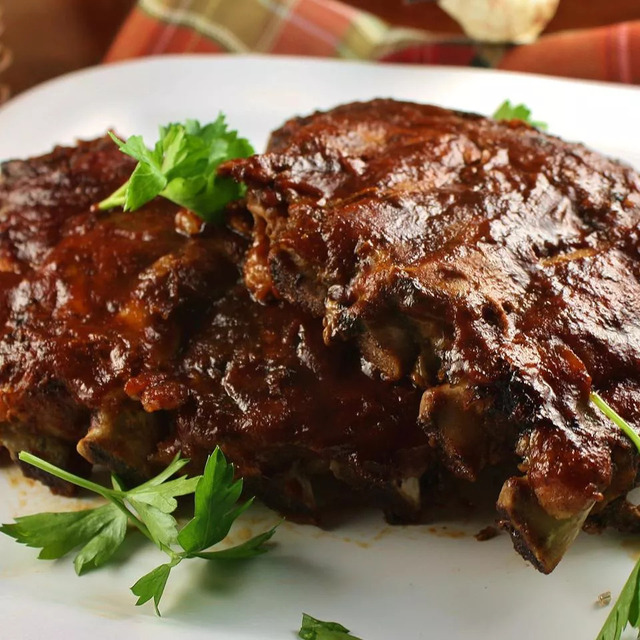

- 3 pounds baby back ribs, trimmed
- salt and ground black pepper, to taste
- ½ onion, sliced
- 1 clove garlic, minced
- 1 (18 ounce) bottle barbeque sauce
- 1. Season ribs with salt and pepper.
- 2. Pour 1/2 cup water into the slow cooker, then add ribs. Scatter onion and garlic over top.
- 3. Cover and cook on Low for 8 hours or High for 4 hours.
- 4. When the ribs are almost finished, preheat the oven to 375 degrees F (190 degrees C).
- 5. Transfer ribs from the slow cooker to a baking sheet and coat with barbeque sauce. Discard onion and garlic.
- 6. Bake ribs in the preheated oven until sauce caramelizes and sticks to meat, 10 to 15 minutes.